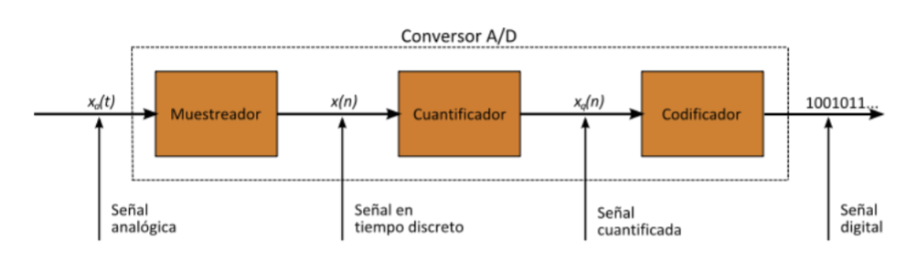
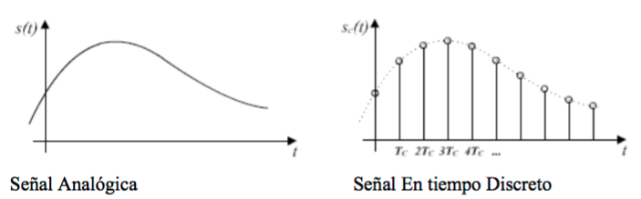
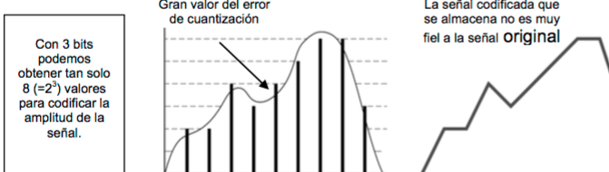

Etapes d'un conversor A/D

Mostreig Digital
El senyal analògic es continu en el temps i el senyal digital és discret. Caldrà, per tant, definir quantes mostres per segon s'han de prendre per poder reconstruir el senyal en recepció sense pèrdues.
Segons el teorema de Nyquist-Shannon la freqüència de mostreig (mostres preses cada segon) serà e doble de l'ample de banda del senyal, o el doble de la freqüència màxima del senyal si es troba en banda base.

Quantificació
En segón lloc s'han de definir els nivells de voltatge que es podran diferenciar a la senyal digitalitzada. Com més nivells més semblant serà el senyal reconstruït al senyal original.

Codificació
La tercera etapa consisteix en traduir els valors obtinguts al codi binari per fer la transmissió. El número de bits necessaris serà el logaritme en base 2 del número de nivells.